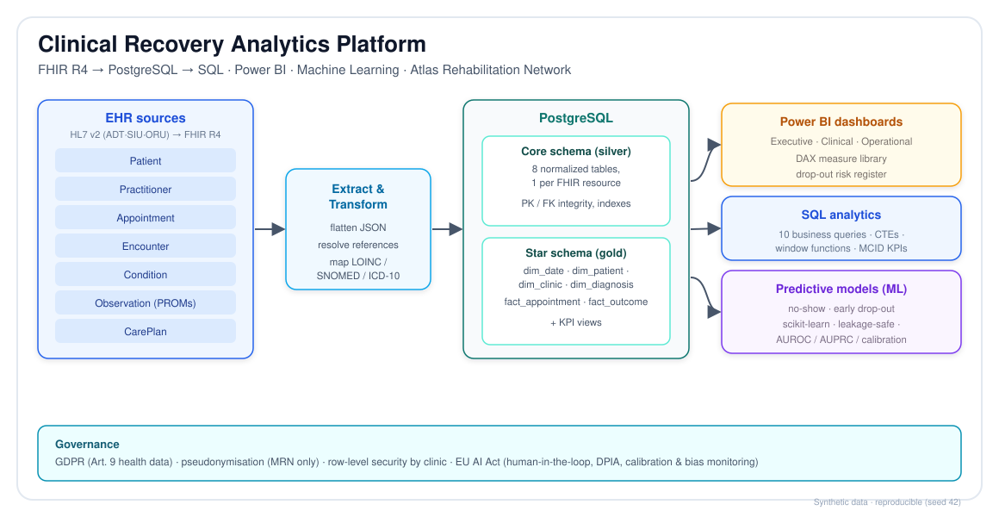

HL7 v2 → FHIR R4 → PostgreSQL → SQL · Power BI · Machine Learning | Atlas Rehabilitation Network (synthetic data)
Resolved appointments (fulfilled + no-show + cancelled).
Slots booked ≥14 days ahead are missed ~55% more often.
% reaching the Minimal Clinically Important Difference (target 80%).
Mean functional improvement by % of planned sessions attended.
From v_dropout_risk (days since last visit + sessions remaining).
Leakage-safe features, time-based split.
| Model | AUROC | AUPRC | base rate | risk lift |
|---|---|---|---|---|
| No-show (gradient boosting) | 0.59 | 0.16 | 0.12 | ×1.5 (top decile) |
| Early drop-out (logistic) | 0.66 | 0.47 | 0.26 | ×1.6 (top quintile) |
Top drop-out drivers: early attendance, age, planned course length, payer, baseline disability. Decision support — not automation (see governance).

| Layer | What it does | In the repo |
|---|---|---|
| HL7 v2 ingestion | ADT / SIU / ORU feeds → FHIR R4 | /hl7v2 |
| FHIR R4 | interoperable clinical resources | /fhir |
| PostgreSQL | core + star schema, KPI views | /sql |
| Power BI | executive · clinical · operational dashboards | /powerbi |
| Machine learning | no-show & early drop-out models | /ml |
| Walkthrough | executed end-to-end notebook | /notebooks |
| Quality | 33 data-quality + HL7 tests, CI | /tests, .github |